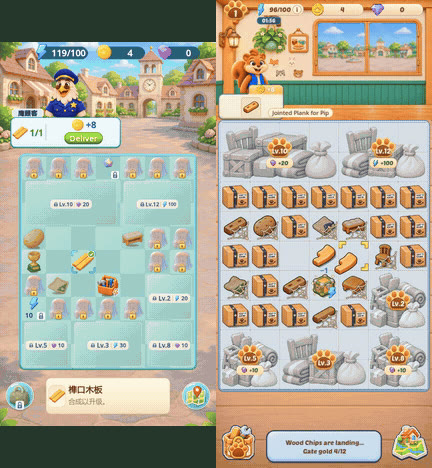
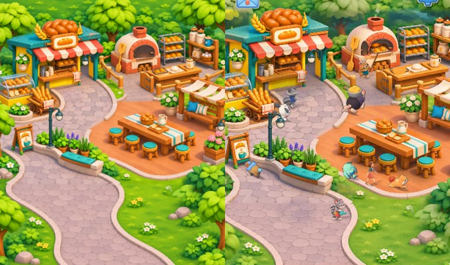

六条工作流11 月 27 日 · 核对至 r480
自动 UA
- Agent
- 产品、二合制作人、UA 素材、运营小云
- Skill
- 买量创意、玩法拍摄与剪辑、广告多语种适配、运营核对
玩法 R4 实录三轮交单。剧情 R29 已更新，待复审。
视频多语言适配 · 支持 8 种语言
自动换文字、图片、对白和配音，也能调整部分口型。已交商业化小组试用，等待反馈。
- 简中
- 繁中
- 西语
- 德语
- 阿语
- 韩语
- 印尼语
- 马来语
《一美分小费》V22 · 七语种完整审阅片
看七种片尾和图文对照
- 验收
- 两支样片复核 · 多语言工具试用 · V22 样片与审阅记录
产品决策、样片和运营承接
玩法 R4 把三次交单接到一张缺木板的新订单。剧情 R29 调整了水花、对应音效和片尾。试投回执待核。
自动设计
- Agent
- 二合大牛、主策与数值策划
- Skill
- Foodstars 新手研究、新手引导调优
重排客栈和早餐亭的委托，新增 4 个可选单。新版规则已复跑。
开局两单接到修门
第一单给 4 金，第二单给 8 金，刚好够用 12 金修车站门。
给合成成品安排去处
可选委托 10 → 14。四张建设委托随对应进度开放，给这些高级成品明确的交付用途。
- 餐椅 · 56 金
- 长椅 · 116 金
- 防雨罩 · 26 金
- 三明治 · 56 金
- 交付
- 新版策划源表
自动制作
- Agent
- 客户端研发，实例名待核
- Skill
- 客户端代码审核、出包校验
正式棋盘换新。新档能合成、交单和修门，手机包待验。
修门后马上看到结果
交互接通扣费、木板进场和门口恢复通行。桌面实录已走通。
棋盘加载时可以返回
等待时能回到城镇，再点合成可以重新打开棋盘。桌面实点已复验。
- 交付
- 客户端交接
自动美术
- Agent
- 棋盘、场景和角色美术
- Skill
- 棋盘落地、场景制作、D2 角色
新版棋盘、锁区和订单画面已接入。车站拆件仍待整景验收。
- 验收
- 新版棋盘实机
候选图、前后对照与 Skill 归档
松湾三态和居民入景仍为美术候选。地图拆件新增回装验收方法，车站整景仍待签收。
自动测试与迭代
- Agent
- 小Q、客户端 QA
- Skill
- 历史缺陷回归
模拟器和桌面专项有回执。25–27 日内测的真机用包仍待核。
- 交付
- 桌面开局复测
25–27 日功能 QA 与待复验
25 日 · v96／r396 模拟器。 39 个历史项里，21 个在所测条件下未复现，11 个只复测了一部分，5 个复现，1 个场景没能重现，1 个判为非缺陷。另确认建设预览英文被截断。
27 日 · 正式桌面。 开局 56 项和棋盘返回 20 项通过。风铃花园 32 个委托的规则复算通过。
待同包真机。 实际安装包和实体手机回执待核。封箱详情、拖放后绿色提示、详情遮挡需在手机上复验。五玩法预览仍待交 APK，独立验收未派发。
集群工作流
- Agent
- 两台工作站完成 Pip 接力和五套棋盘。
- Skill
- 角色动画、窗口测试、棋盘换图与核对。
Pip 跨站复验通过。五套棋盘已合版，末轮独立复验待补。
- 验收
- 工作站原始回执
Agent、Skill 与验收回执
Pip 已通过。 SHA1713 核对 3 件动画资源和 9 个动作，按角色 Spine Skill 交回核验数据。SHA1256 复核同一份数据，使用角色 Spine、Godot 自动检查和界面交互方法做窗口复验。50 项窗口检查通过，日志、代表帧和证据包已留档。
五套棋盘已冻结候选。 两台工作站完成五条制作线。海边首轮交齐，其余四套按样板接力补齐。每套 582 件，同一 Windows 候选 f898ddc3 已跑通开局。
- 海边木作SHA1713 Agent 1 完成全量制作回执
- 花园温室SHA1256 Agent 2 样板，SHA1713 补齐样板回执 补齐回执
- 街角工坊SHA1713 Agent 3 样板，SHA1713 补齐样板回执 补齐回执
- 山间集市SHA1256 Agent 4 样板，SHA1256 补齐样板回执 补齐回执
- 灯火广场SHA1713 Agent 5 样板，SHA1256 补齐样板回执 补齐回执
日志核实的 Skill。 五套均有换图、逐件画面核对、交互验收和客户端接入的 Skill 读取记录。海边另读代码审核、关系核对、GDScript 和行为对照。工坊补齐另读需求验收。看每个会话的 Skill 和验收
待补验收。 SHA1122 的末轮交付失败，任务取消。旧版验收报告及新版集成回执均已留存，五套尚待独立签收。原任务需公司网络和工作站权限。
每周项目增量对比 11 月 19 日 → 27 日 · 30 项
上周与本周 · 合成和交单

车站第二单 · 前后画面
盖布解锁 · 26 日下午交接记录
局外实录 · 米洛早餐亭

最新工程 · 3D 小动物巡游
正式工程与功能 · 21 项
| 变化项 | 上周 | 本周 |
|---|---|---|
| 默认玩法与出包模拟器已复验 | 上周 内测车站版，备选开场并行 | 本周 统一车站版，出包可拦错 证据 |
| 序章开场和续玩桌面已实点 | 上周 车厢教学后进车站 | 本周 5 秒片头可跳过，旧档可续 证据 |
| 章节入口与场景桌面已复验 | 上周 三处场景已能试玩 | 本周 进早餐亭后首项建设会弹出 证据 |
| 订单与续单正式工程交接 | 上周 主线与续单已走通 | 本周 可选委托 10 → 14，晚期六种委托按新配置循环 |
| 生产器与补货正式工程交接 | 上周 基础合成和交单已测 | 本周 六个设备每 45 秒补货 |
| 建设与体力节奏自动路线已有结果 | 上周 三处场景、23 步建设 | 本周 重排开局供给和委托。早餐亭整段实跑待复验。 |
| 初始棋盘与解锁奖励桌面实跑 | 上周 已有开局棋盘和解锁 | 本周 新版调整上方锁区、建设解锁与奖励 |
| 棋盘整理内网更新已发 | 上周 已验常用棋盘操作 | 本周 v96 内网补回整理 证据 |
| 棋盘换新与交互修复正式桌面 | 此前 旧版棋盘和订单栏。 | 本周 新棋盘接入，修正封箱详情、落位绿格和详情遮挡。 证据 |
| 棋盘拖拽与订单横滑桌面已复验 | 上周 已调整订单显示 | 本周 拖走棋子后原格恢复，顾客跟随横滑 证据 |
| 仓库、售价与撤销规则及事务回归 | 上周 已有资产收支检查 | 本周 先用盘面再扣仓库，70 种材料卖出换体力 |
| 顾客动作与交付桌面已复验 | 上周 已有接物和交单反馈 | 本周 五位顾客实跑待机、眨眼、接物和退场 |
| 连续交单、升等与到账桌面专项 | 上周 已有金币和建设回执 | 本周 第二单排队演出，奖励到账后退场 证据 |
| 操作按钮、文案与竖屏桌面已验证 | 上周 调整订单、奖励和底栏 | 本周 按钮统一，长短屏复测 |
| 合成操作卡顿模拟器候选 | 上周 已减少重复刷新 | 本周 同机卡顿 11 → 0，待真机验 证据 |
| 订单材料怎么获得晚间工程 · 已见弹窗 | 上周 能查看材料合成关系 | 本周 点订单材料，直接显示来源和合成链 |
| 进棋盘等待与返回晚间工程 · 桌面复测 | 上周 进入棋盘时等待资源 | 本周 提前准备画面，加载能返回，重进可用 |
| 场景内动物巡游r469 · 工程已接入 | 上周 有场景常驻角色动作 | 本周 补入巡游路径、步幅与贴地动作 |
| 风铃花园r478 · 规则复跑通过 | 上周 范围到早餐亭 | 本周 32 份委托规则再次通过。整章试玩待验。 证据 |
| 章节资源下载桌面限速与分包验证 | 上周 试过早餐分享单项分包 | 本周 首次进客栈 188 → 19.9 MB |
| 旅行等待、棋盘伙伴与触感源码记录 · 待实测 | 上周 已有进章等待和触感候选 | 本周 盖章、伙伴和触感有改动，待实跑 证据 |
内容产出与候选 · 5 项
| 变化项 | 上周 | 本周 |
|---|---|---|
| 前 20 级玩法候选独立候选 | 上周 已能试玩前三处场景 | 本周 独立候选跑到晨市开张 |
| 场景素材与返修美术候选与归档 | 上周 已有实景和待改场景图 | 本周 松湾做出三态；米洛恢复 16 张选图 |
| 居民概念概念候选 | 上周 已有居民草图 | 本周 新增六位角色概念，待采用 |
| 五套棋盘主题整合候选 | 上周 试玩盘检查过 582 件物品 | 本周 五套棋盘已合版，16/17 项完成 证据 |
| 宣传短片内部样例归档 | 上周 有修门、合成及救援样片 | 本周 玩法 B R4 与剧情 R29 已上页，试投待核 |